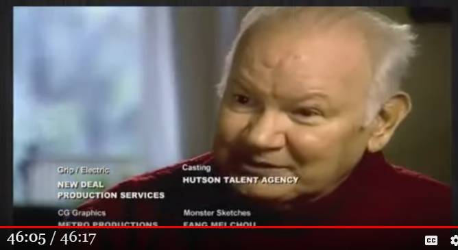

John Keel ：「世界」は人間が捉えているようなあり方をしていない。「人間自体」もそうだ。

更新
・（2019-12-15 追加）別の動画のシメの部分で、John Keel 自身がこのフレーズを語っているシーンを見かけた。なので追加しておく。はじめに
・数ある UFO 研究者の中で私が高く評価するのは Jacques Vallee, John Keel そして Karla Turner の三人。その John Keel の深い洞察を伺わせる発言が下。 ・タイトルはヘボなデタラメ訳。なので下の短い原文を直接読むべき。抜粋
・19:29 "The unknown is out there. The universe does not exist as we think it exists and we don't exist as we think we exist"動画（19:44）
・John Keel https://www.youtube.com/watch?v=iY3frky-QKsおまけ
・19:34 "Belief is the enemy"コメント
・上で、タイトルの件について「John Keel の深い洞察」と述べたが、私はタイトルの主張には本当のところでは同意しない。 ・「「世界」は人間が捉えているようなあり方をしていない。」という主張には ・(a) 「世界」の「真実のあり方」なるものが存在しているが、 ・(b) それは人間には捉えられないものだ という含意がある。この含意は、人間には捉えられない「真実のあり方」、つまり「人間の認識から隔絶し、自立・独立した「真実」がある」という誤った前提に立っている。 ・わかりやすい例で言えば…。「路上の石」は「人間の認識から隔絶し、自立・独立した実体」だが、「赤という色」は「人間の認識から隔絶し、自立・独立した実体」ではない。「真実」は石ではなく色の側に属する。つまり美や正義、善などと同類。 ・なので ざっくり言ってしまえば、「真実」は（いわゆる）真理ではない。つまり、日常的に人が抱いているような真理性のイメージを「真実」は本来は持ち得ない。 ・その意味で、いわば神と同じく「真実」も観念に過ぎず、存在しない。 ・だから、 ・(a') 「世界」の「真実のあり方」といった御大層なものは最初から存在しない。 ・(b') しいて言えば、人間が日常的に捉えているものこそがソレだ。 ・言い換えれば、この「世界」に裏や奥はない。見えているものが全て。真実、つまりプラトンの洞窟の比喩が示すようなイデア的観念は幻想。壁に映った影の反対側に実在や光が存在するのではない。影こそが実在。 ・よって、 ・別次元の存在がこの世界に侵入し顕現したのが ET/UFO, Bigfoot, 幽霊... （John Keel の立場） なのではなく、 ・ET/UFO, Bigfoot, 幽霊... に見えるものも、最初からこの世界の一部だ というのが私の今の考え。 (2019-12-13)
（以下、2019-12-15 追加分）はじめに
・別の動画のシメの部分で、John Keel 自身がこのフレーズを語っているシーンを見かけた。なので追加しておく。 ・このフレーズは番組のシメを飾るにふさわしい…そう番組制作者も判断したようだ。該当箇所
・最後。John Keel 自身が発言。動画（46:17）
・Monsters and Mysteries in America | Season 3 Episode 10 | The John Keel Files (2019-12-15)履歴
(2019-12-13) 作成 (2019-12-15) 追加
初出
John Keel ：「世界」は人間が捉えているようなあり方をしていない。「人間自体」もそうだ。（＋追加） (2019-12-15)
追記 (2022-08-16)
- 上の記事の時点では
・数ある UFO 研究者の中で私が高く評価するのは Jacques Vallee, John Keel そして Karla Turner の三人。
と述べたが、私はもう Jacques Vallee を評価も尊敬もしていない。理由は
- 私は Jacques Vallee の仮説が破綻していると判断するようになった
こともあるが、それより決定的なのは
- Jacques Vallee は UFO 情報撹乱工作に加担している疑いが濃厚
だと判断するに至ったため。その経緯は以下で述べた。
Jacques Vallee の主張: 1980年の Rendlesham/Bentwaters 事件は UFO を偽装した人為的な作戦だ （途中：その1） (2021-02-16)
Jackques Vallee : 1945年の UFO 墜落事件で fiber を入手した証人がいる。これは Philip J. Corso の証言を立証している。 (2021-10-24)